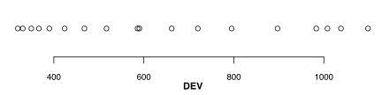
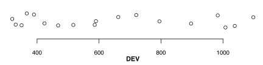
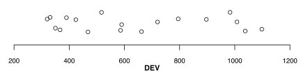
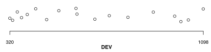

This function creates a plot for a single vector of numerical values, arranging them horizontally from minimum to maximum.
Xplot(x, jitter = FALSE, at, ...)
x |
A numeric vector. | |||
jitter |
Logical, vertically jitter the points. | |||
at |
The points at which tick-marks are to be drawn. Non-finite (infinite, NaN or NA)
values are omitted. By default (when NULL) tickmark locations are automatically
computed, see the help file for ?axis. |
|||
... |
Other graphical parameters from ?par |
This is a special type of (scatter)plot, with points being arranged only on the horizontal axis (it has no vertical axis). Useful when inspecting if points are grouped into naturally occuring clusters, mainly for crisp calibration purposes.
The argument ... is used to pass various graphical parameters for the
various plotting functions used.
The points have a default cex (character expansion) value of 1, and
a default pch value of 1 (empty points), which can be modified
accordingly (for example with value 21 of filled points). When pch = 21,
the color for the margins of the points can be specified via the argument
col, while the argument bg will determine the fill color
of the points.
The axis labels have a default cex.axis value of 0.8, which affects
both the tickmarks labels and the axis labels.
When jittering the points, default values of 0.5 are used for the parameters
factor and amount, on the horizontal axis.
More details can be found in the base function
jitter().
Although the points are displayed in a single dimension, on the horizontal axis, the R graphical window will still have the default squared shape, with a lot of empty space on the vertical axis. Users are free to create their custom code to determine the size of the graphics window, or simply resize it to a suitable height.
# Lipset's raw data # plot the DEV (level of developent) causal condition Xplot(LR$DEV)
# jitter the points vertically Xplot(LR$DEV, jitter = TRUE)
# make the x axis large enough to accommodate all values Xplot(LR$DEV, jitter = TRUE, at = pretty(LR$DEV))
# clip plotting between the range of min and max Xplot(LR$DEV, jitter = TRUE, at = range(LR$DEV))